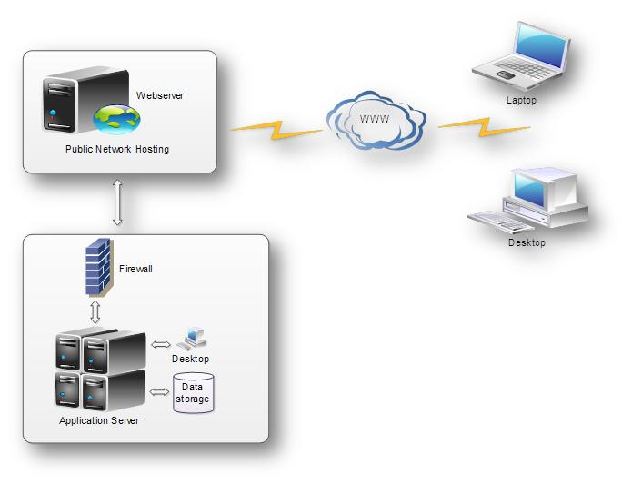

Smart ERP |
ERP stands for Enterprise Resource Planning. This software designed to support and automate the business process of medium and large businesses. This may include manufacturing, distribution, and personnel, HRM, Attendance, Payroll and Managements. |
| The purpose of ERP is to facilitate the flow of information between all business functions inside the boundaries of the organization and manage the connections to outside customers. |
| Features : |
| Single Software to take care of Master, HRM, Attendance, Payroll, PF,ESI, Sales, Purchase, Production, Quality, Stock, Conveyance and all. |
| Removes all multiple data entries and manual work in stock keeping, purchase etc |
| Reduces Manpower, saves Money, improves efficiency and hence Production/Sales. |
| All information is available immediately. No need to go through records and waste time. |
| Affordable Cost |
| Easy to Use and Very Flexible and Expands with Company Growth. |
| Integrates operations of all departments, removes redundancies, improves efficiency. |
| Big saving on time, enabling productive use of manpower |
| No Server or High-end Computers are required |
| Software Installation Required only on ONE PC |
| Any number of users can use the ERP system from their PCs using Browser, without any User fees! |
| No Annual License Fees |
| No Specialized Manpower Required |
| Each user can see only his part of work (For Example, Stores Officer can not see Payrolls.) |
| Management can Monitor all Departments and See pending Work under each Department |
| Alerts on Dashboard (For Example Upcoming Birth day, Anniversary, Stock Transfer etc) |
| All functions are automated. No need to spend time making POs, gathering information etc. Just open screen, approve and print, with data preloaded. |
| Information Search by Unique Drill Down Menu |
| User Customizable Reports and Excel Interface |
| Preformatted Reports on Sales, Purchase, Stock Levels, Receivables, Payables P&L etc |
Functional Areas : |
| The following are common functional areas covered in an ERP System. In many ERP Systems these are called and grouped together as ERP Modules: |
| Smart Common |
| Country, State, District, Location, Company, Branch, Office, Department, Designation, Blood group, Qualification, Staff Type, Certification, Id Proof, Bank, Bank Branch, Staff Registration and their corresponding reports. |
| Smart HRM |
| Company Benefits, Job Design, Application, Demand, Technical Skills, General Skills, Test Type, Test Question, Online Test, Interview, Conclusion, Offer letter, Careers, Employee verification and Reports . |
| Smart Attendance |
| Attendance Register, Finger Prints, Proximity Cards, Staff Hold, Certification Track, Leave Type, Leave Master, Leave Entry, Leave Management System, Shift Mater, Shift Allocation, Shift Management, Holiday, Common Holiday, Extra Days, Over Time, Attendance Transaction such as On duty, Permission, Leave, Manual Attendance, Late, Absent. Attendance cycle-1 and cycle 2. Attendance Process and Reports. |
| Smart Payroll |
| Allowance, Recovery, Tax, Revision, Advance, Mess, Migration, deduction, Salary Process, Bonus Calculation, Transfer, Promotion, Termination, Appointment Order, Exit Interview, Pay slip and Reports. PF, ESI calculation and all PF,ESI Reports. |
| Smart Inventory |
| Payment terms, Tax , terms and condition, Color, Model, Payment terms, Division, Target Assign. Item group, item, Product group, Product list, Stock, Stock Transfer
Customer group, Customer, Quotation. purchase Order, Delivery Challan, Invoice, Sales Return, Payments, Vendor Group, vendor, Purchase order, Goods received, goods return, Payments. PO request, approval, accept, And direct purchase and sales. Service billing, Direct billing, payment commitment. Installation , Accounts verification, Target Analysis for month, quarter and annually. Stock reports, Track the serial number and no of reports. |
| Smart Accounts |
| General Ledger, Fixed Asset, Payables, Receivables, Cash Management, Financial Consolidation. |
| Smart Assets |
| Item group, item Asset in, asset out and Reports. |
| Smart Conveyance |
| Conveyance Entry, Approval, Reject, Acknowledge, Paid and Reports. |
| Smart Help |
| All modules help in the form of html format and FAQ is available. |
| Smart Marketing |
| Customer group, customer, Mobile contacts, employee schedules and reports. |
| Smart Management |
| Master , Transaction and Reports. |
| Smart Mail |
| Future Enhancements. |
| Smart SMS |
| Future Enhancements. |
| Smart Transport |
| Fuel type, vehicle type,make. Model, variant, vehicle info, driver info, accessories, Transaction,Insurance remainder, Insurance master and reports. |
| Smart Utility |
| User list, rights, office, category, user type, common setting, attendance setting, inventory setting, rights transfer, mobile resets. Menu resets. Password, all the setting, Mail, Themes, Search and Reports. |
| Smart CRM |
| Customer, group, customer, service center, service items, contract, call booking, call assign payment and reports. |
| Smart Service Report |
| Master, Transaction and Reports |
| Smart Debug |
| Master, Transaction and Reports |
| Smart UploadDownlod |
| Category, upload single & multi file and download. |
| Logout |
| Logout the software. |
Benefits : |
| ERP can greatly improve the quality and efficiency of a business. By keeping a company's internal business process running smoothly, ERP can lead to better outputs that will benefit the company such as customer service, and manufacturing.
|
| ERP provides support to upper level management to provide them with critical decision making information. This decision support will allow the upper level management to make managerial choices that will enhance the business down the road. |
| ERP also creates a more agile company that can better adapt to situations and changes. ERP makes the company more flexible and less rigidly structured in an effort to allow the different parts of an organization to become more cohesive, in turn, enhancing the business both internally and externally. |
Technology used : |
| 1. JDK1.5 2. J2ee 3. My SQL 5.0 4. Tomcat 5.0 |
| Process Diagram : |
|  |